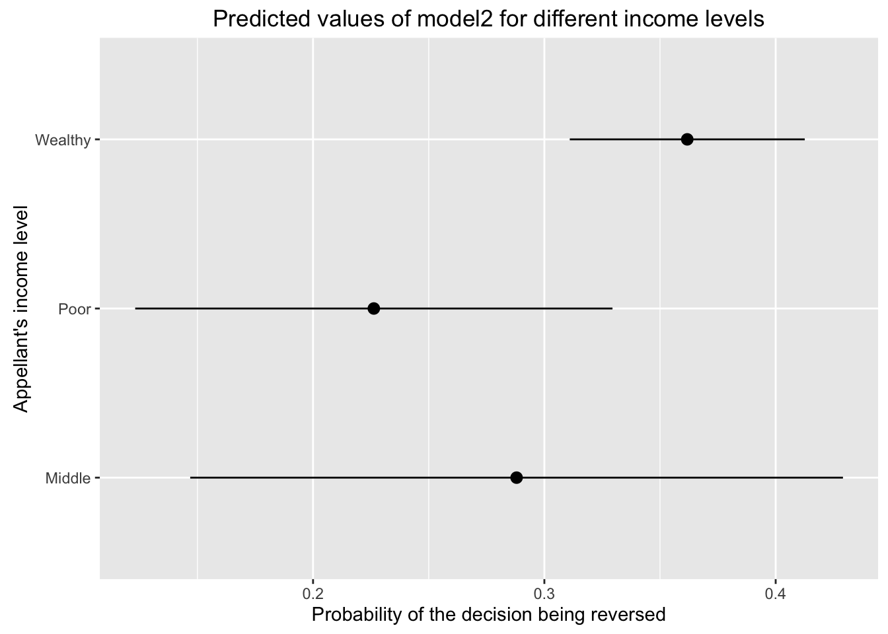
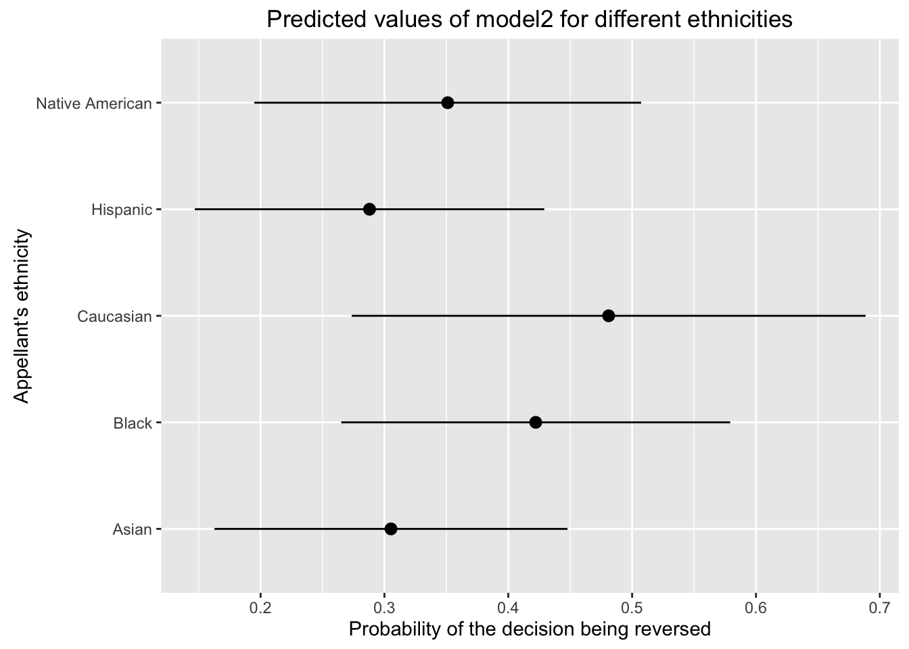

In this lesson we will use a subset of Carolyn Dapper’s dataset, with data from the United States Courts of Appeals Data Base (Dr. Donald R. Songer’s project).
library(dplyr)
library(ggplot2)
appeals_sub <- read.csv("data/appeals_sub.csv")In this lesson we will go over how to use categorical covariates in a linear model, how to interpret their coefficients, and how to plot predicted values.
Categorical variables are not different than other variables when specifying a linear model in R, we just need to add the variable with the variable in the formula parameter of the lm() function.
model1 <- lm(formula = reversed_dum ~ income, data = appeals_sub)When including a categorical covariate in a linear model, R calculates a coefficient for each of the categories but one of them: the base or reference category.
In model one we only included one covariate, income, which is a categorical variable with 3 categories: Poor, Middle, and Wealthy. When we ask for the summary() of model1, we get explicit coefficients for Poor and Wealthy but not for Middle.
summary(model1)##
## Call:
## lm(formula = reversed_dum ~ income, data = appeals_sub)
##
## Residuals:
## Min 1Q Median 3Q Max
## -0.3839 -0.3839 -0.3559 0.6161 0.6963
##
## Coefficients:
## Estimate Std. Error t value Pr(>|t|)
## (Intercept) 0.35593 0.06274 5.673 2.03e-08 ***
## incomePoor -0.05223 0.07521 -0.694 0.488
## incomeWealthy 0.02796 0.06612 0.423 0.672
## ---
## Signif. codes: 0 '***' 0.001 '**' 0.01 '*' 0.05 '.' 0.1 ' ' 1
##
## Residual standard error: 0.4819 on 725 degrees of freedom
## Multiple R-squared: 0.004143, Adjusted R-squared: 0.001396
## F-statistic: 1.508 on 2 and 725 DF, p-value: 0.222These two coefficients (Poor and Wealthy) indicate the effect that being poor and wealthy have on the outcome (reversed_dum) compared to the effect of having a Middle income. The (Intercept) coefficient indicates the effect of having a Middle income.
newdata = data.frame(income = c("Middle", "Poor", "Wealthy"))
pred1 <- predict(model1, newdata = newdata)
pred1b <- data.frame(cat = c("Middle", "Poor", "Wealthy"), effect = pred1)
pred1b## cat effect
## 1 Middle 0.3559322
## 2 Poor 0.3037037
## 3 Wealthy 0.3838951When we have more than one categorical variable, the coefficient of the (Intercept) indicates the effect of having/belonging to all the reference categories. For example, if we estimate a new model (model2) with two categorical covariates, income and ethnicity, the (Intercept) coefficient is the effect of having a Middle income and being Asian (the two base categories).
model2 <- lm(formula = reversed_dum ~ income + ethnicity, data = appeals_sub)
summary(model2)##
## Call:
## lm(formula = reversed_dum ~ income + ethnicity, data = appeals_sub)
##
## Residuals:
## Min 1Q Median 3Q Max
## -0.5548 -0.3618 -0.3604 0.6209 0.7737
##
## Coefficients:
## Estimate Std. Error t value Pr(>|t|)
## (Intercept) 0.30527 0.07261 4.205 2.95e-05 ***
## incomePoor -0.06172 0.07792 -0.792 0.4286
## incomeWealthy 0.07378 0.07010 1.053 0.2929
## ethnicityBlack 0.11689 0.06048 1.933 0.0536 .
## ethnicityCaucasian 0.17577 0.10432 1.685 0.0924 .
## ethnicityHispanic -0.01728 0.04483 -0.386 0.7000
## ethnicityNative American 0.04581 0.07365 0.622 0.5341
## ---
## Signif. codes: 0 '***' 0.001 '**' 0.01 '*' 0.05 '.' 0.1 ' ' 1
##
## Residual standard error: 0.4806 on 721 degrees of freedom
## Multiple R-squared: 0.01513, Adjusted R-squared: 0.006935
## F-statistic: 1.846 on 6 and 721 DF, p-value: 0.08767At some point we may be interested in changing the base category to facilitate the interpretations of the findings. This is very easy to do with the relevel() function. Imagine we want Caucasian to be the base reference of the ethnicity variable.
appeals_sub <- mutate(appeals_sub, ethnicity = relevel(ethnicity, "Caucasian"))Run the model again and look at the summary() to see the changes.
model2 <- lm(formula = reversed_dum ~ income + ethnicity, data = appeals_sub)
summary(model2)##
## Call:
## lm(formula = reversed_dum ~ income + ethnicity, data = appeals_sub)
##
## Residuals:
## Min 1Q Median 3Q Max
## -0.5548 -0.3618 -0.3604 0.6209 0.7737
##
## Coefficients:
## Estimate Std. Error t value Pr(>|t|)
## (Intercept) 0.48105 0.10566 4.553 6.22e-06 ***
## incomePoor -0.06172 0.07792 -0.792 0.4286
## incomeWealthy 0.07378 0.07010 1.053 0.2929
## ethnicityAsian -0.17577 0.10432 -1.685 0.0924 .
## ethnicityBlack -0.05888 0.10686 -0.551 0.5818
## ethnicityHispanic -0.19306 0.10317 -1.871 0.0617 .
## ethnicityNative American -0.12996 0.11512 -1.129 0.2593
## ---
## Signif. codes: 0 '***' 0.001 '**' 0.01 '*' 0.05 '.' 0.1 ' ' 1
##
## Residual standard error: 0.4806 on 721 degrees of freedom
## Multiple R-squared: 0.01513, Adjusted R-squared: 0.006935
## F-statistic: 1.846 on 6 and 721 DF, p-value: 0.08767To illustrate the effect of these two covariates, we can use predicted values. For income, we need to predict three different scenarios, one for each of the income categories, while keeping the other variable ethnicity constant. In this case it doesn’t matter which ethnic category we use as long as it’s constant across the three income scenarios. Let’s use “Hispanic”.
income_scenarios <- data.frame(income = c("Poor", "Middle", "Wealthy"),
ethnicity = "Hispanic")
income_scenarios## income ethnicity
## 1 Poor Hispanic
## 2 Middle Hispanic
## 3 Wealthy Hispanicincome_pred <- as.data.frame(predict(model2, newdata = income_scenarios,
interval = "confidence"))
income_pred$income <- income_scenarios$incomeOnce we have the predicted values for these 3 scenarios, we can plot the results using geom_pointrange().
ggplot(income_pred, aes(x = income, y = fit, ymin = lwr, ymax = upr)) +
geom_pointrange() +
coord_flip() +
ylab("Probability of the decision being reversed") +
xlab("Appellant's income level") +
ggtitle("Predicted values of model2 for different income levels")
We can do the same for the other categorical covariate and plot the predicted values when keeping income constant (e.g. Middle) and changing the ethnicity category.
ethnic_scenarios <- data.frame(ethnicity = levels(appeals_sub$ethnicity),
income = "Middle")
ethnic_scenarios## ethnicity income
## 1 Caucasian Middle
## 2 Asian Middle
## 3 Black Middle
## 4 Hispanic Middle
## 5 Native American Middleethnic_pred <- as.data.frame(predict(model2, newdata = ethnic_scenarios,
interval = "confidence"))
ethnic_pred$ethnicity <- ethnic_scenarios$ethnicityggplot(ethnic_pred, aes(x = ethnicity, y = fit, ymin = lwr, ymax = upr)) +
geom_pointrange() +
coord_flip() +
ylab("Probability of the decision being reversed") +
xlab("Appellant's ethnicity") +
ggtitle("Predicted values of model2 for different ethnicities")